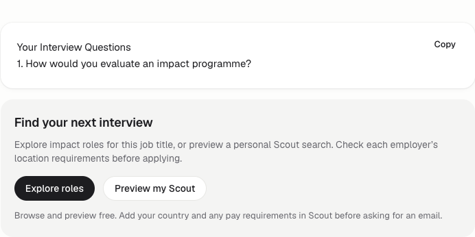

Remote Impact · 15 October 2026 · No new subscription purchased
Three growth pilots, with the first changes live
1. Interview prep → relevant jobs
Successful interview-question generation now reveals an “Explore roles” link preserving the entered job title and a “Preview my Scout” link preserving role and organization type. No automatic level or country filter is invented. The result remains visible and usable without signup.
Live interview tool · Browser checks

Screenshot from production with a stubbed generation response. Both HTMX and fetch fallback passed success, encoded-title preservation and error-state checks. No paid model generation was used for the test.
2. Ten editorial prospects
Ten actual resource pages inspected, each with an individual draft and a publicly sourced contact route. Eight new admin records and two enriched existing research records. Previously contacted prospects excluded. No domain link observed on these ten fetched pages; this is not a site-wide backlink audit. Update: the user authorized sending on October 15. Seven individual emails were provider-accepted and are recorded as contacted. Three remain unsent: Charity Charge and National Nonprofits have no verified suitable email route, and Berkeley requests a link-submission form. Send receipts and held prospects.
Admin workspace · Import CSV · Full research and drafts
1. Wisconsin La Follette Career Hub · Priority 1
Inspected resource page · Contact source · Suggested destination
Your NGO compendium includes Idealist, Devex and ReliefWeb; a remote-focused option would help readers who need to compare location restrictions.
Route: careerdev@lafollette.wisc.edu
Strong audience fit; generic career-office contact, no invitation to list established.
Resource suggestion for Wisconsin La Follette Career Hub
Hi Wisconsin La Follette Career Hub team,
I’m Dipesh, and I maintain Remote Impact. Your NGO compendium includes Idealist, Devex and ReliefWeb; a remote-focused option would help readers who need to compare location restrictions.
Here is the relevant page: https://remoteimpact.org/resources/remote-impact-jobs/
Browsing is free. Listings link to their source, and candidates should check employer eligibility and current availability. Our career-center resource page also explains the free RSS feed: https://remoteimpact.org/resources/remote-impact-jobs/
Would this be useful for your readers at the next editorial update? Happy to provide a short factual description. No paid placement or reciprocal link is requested.
Thanks,
Dipesh
Remote Impact | hello@remoteimpact.org
2. NIH Fogarty Global Health Careers · Priority 1
Inspected resource page · Contact source · Suggested destination
Your Global Health Career Information and Job Opportunities section explicitly welcomes suggested resources; Remote Impact adds a way to explore remote health roles with employer links.
Route: ficinfo@mail.nih.gov
Explicit resource-suggestion invitation. Request consideration, never imply NIH endorsement. Existing research seed, enrich without duplicating case-variant URL.
Resource suggestion for NIH Fogarty Global Health Careers
Hi NIH Fogarty Global Health Careers team,
I’m Dipesh, and I maintain Remote Impact. Your Global Health Career Information and Job Opportunities section explicitly welcomes suggested resources; Remote Impact adds a way to explore remote health roles with employer links.
Here is the relevant page: https://remoteimpact.org/jobs/category/global-health/
Browsing is free. Listings link to their source, and candidates should check employer eligibility and current availability. Our career-center resource page also explains the free RSS feed: https://remoteimpact.org/resources/remote-impact-jobs/
Would this be useful for your readers at the next editorial update? Happy to provide a short factual description. No paid placement or reciprocal link is requested.
Thanks,
Dipesh
Remote Impact | hello@remoteimpact.org
3. Ohio University Global Health Initiative · Priority 1
Inspected resource page · Contact source · Suggested destination
Your International Development Job Sites section includes Devex, Idealist and ReliefWeb; a remote-health collection would give students a narrower starting point.
Route: globalhealth@ohio.edu
Existing research seed; no previous contact found in workspace.
Resource suggestion for Ohio University Global Health Initiative
Hi Ohio University Global Health Initiative team,
I’m Dipesh, and I maintain Remote Impact. Your International Development Job Sites section includes Devex, Idealist and ReliefWeb; a remote-health collection would give students a narrower starting point.
Here is the relevant page: https://remoteimpact.org/jobs/category/global-health/
Browsing is free. Listings link to their source, and candidates should check employer eligibility and current availability. Our career-center resource page also explains the free RSS feed: https://remoteimpact.org/resources/remote-impact-jobs/
Would this be useful for your readers at the next editorial update? Happy to provide a short factual description. No paid placement or reciprocal link is requested.
Thanks,
Dipesh
Remote Impact | hello@remoteimpact.org
4. University of Washington Career & Internship Center · Priority 1
Inspected resource page · Contact source · Suggested destination
Your climate search-engine page links to DOI, CoolWorks and the College of the Environment; a remote climate collection would complement those place-based options.
Route: askcic@uw.edu
Good topical fit; public general-office address, editor assignment unconfirmed.
Resource suggestion for University of Washington Career & Internship Center
Hi University of Washington Career & Internship Center team,
I’m Dipesh, and I maintain Remote Impact. Your climate search-engine page links to DOI, CoolWorks and the College of the Environment; a remote climate collection would complement those place-based options.
Here is the relevant page: https://remoteimpact.org/jobs/category/climate-environment/
Browsing is free. Listings link to their source, and candidates should check employer eligibility and current availability. Our career-center resource page also explains the free RSS feed: https://remoteimpact.org/resources/remote-impact-jobs/
Would this be useful for your readers at the next editorial update? Happy to provide a short factual description. No paid placement or reciprocal link is requested.
Thanks,
Dipesh
Remote Impact | hello@remoteimpact.org
5. Boston University School of Public Health · Priority 1
Inspected resource page · Contact source · Suggested destination
Your programme-management guide separates global-health boards from general public-health resources; remote programme roles could be a useful addition to that section.
Route: sphcareeroffice@bu.edu
Use department route, not multiple individual advisers. Does not replace practicum or immigration advice.
Resource suggestion for Boston University School of Public Health
Hi Boston University School of Public Health team,
I’m Dipesh, and I maintain Remote Impact. Your programme-management guide separates global-health boards from general public-health resources; remote programme roles could be a useful addition to that section.
Here is the relevant page: https://remoteimpact.org/jobs/category/global-health/
Browsing is free. Listings link to their source, and candidates should check employer eligibility and current availability. Our career-center resource page also explains the free RSS feed: https://remoteimpact.org/resources/remote-impact-jobs/
Would this be useful for your readers at the next editorial update? Happy to provide a short factual description. No paid placement or reciprocal link is requested.
Thanks,
Dipesh
Remote Impact | hello@remoteimpact.org
6. Charity Charge editorial resources · Priority 2
Inspected resource page · Contact source · Suggested destination
Your remote nonprofit jobs guide already compares eight specialist platforms; Remote Impact could add a source-linked remote nonprofit collection with visible country restrictions.
Route: https://www.charitycharge.com/contact/
Exact-intent editorial fit. Contact is general company form, editor and acceptance unconfirmed.
Resource suggestion for Charity Charge editorial resources
Hi Charity Charge editorial resources team,
I’m Dipesh, and I maintain Remote Impact. Your remote nonprofit jobs guide already compares eight specialist platforms; Remote Impact could add a source-linked remote nonprofit collection with visible country restrictions.
Here is the relevant page: https://remoteimpact.org/impact/remote-nonprofit-jobs/
Browsing is free. Listings link to their source, and candidates should check employer eligibility and current availability. Our career-center resource page also explains the free RSS feed: https://remoteimpact.org/resources/remote-impact-jobs/
Would this be useful for your readers at the next editorial update? Happy to provide a short factual description. No paid placement or reciprocal link is requested.
Thanks,
Dipesh
Remote Impact | hello@remoteimpact.org
7. UC Berkeley Career Engagement · Priority 2
Inspected resource page · Contact source · Suggested destination
Your job-board guide includes government/nonprofit careers and research institutes; remote impact roles could help graduates compare research, policy and data work across mission-led employers.
Route: https://www.career.berkeley.edu/about-us/contact-us/
Broader audience than core niche; route through general office/vendor inquiry policy, no placement promise.
Resource suggestion for UC Berkeley Career Engagement
Hi UC Berkeley Career Engagement team,
I’m Dipesh, and I maintain Remote Impact. Your job-board guide includes government/nonprofit careers and research institutes; remote impact roles could help graduates compare research, policy and data work across mission-led employers.
Here is the relevant page: https://remoteimpact.org/resources/remote-impact-jobs/
Browsing is free. Listings link to their source, and candidates should check employer eligibility and current availability. Our career-center resource page also explains the free RSS feed: https://remoteimpact.org/resources/remote-impact-jobs/
Would this be useful for your readers at the next editorial update? Happy to provide a short factual description. No paid placement or reciprocal link is requested.
Thanks,
Dipesh
Remote Impact | hello@remoteimpact.org
8. UST nonprofit workforce resources · Priority 2
Inspected resource page · Contact source · Suggested destination
Your nonprofit board comparison records location and salary-disclosure requirements; a remote nonprofit collection could be useful if a broader remote category fits your editorial scope.
Route: https://www.chooseust.org/contact-us/
US association-board emphasis makes fit less certain. Never claim all Remote Impact listings disclose salary.
Resource suggestion for UST nonprofit workforce resources
Hi UST nonprofit workforce resources team,
I’m Dipesh, and I maintain Remote Impact. Your nonprofit board comparison records location and salary-disclosure requirements; a remote nonprofit collection could be useful if a broader remote category fits your editorial scope.
Here is the relevant page: https://remoteimpact.org/impact/remote-nonprofit-jobs/
Browsing is free. Listings link to their source, and candidates should check employer eligibility and current availability. Our career-center resource page also explains the free RSS feed: https://remoteimpact.org/resources/remote-impact-jobs/
Would this be useful for your readers at the next editorial update? Happy to provide a short factual description. No paid placement or reciprocal link is requested.
Thanks,
Dipesh
Remote Impact | hello@remoteimpact.org
9. Givebutter nonprofit hiring guide · Priority 3
Inspected resource page · Contact source · Suggested destination
Your nonprofit hiring guide compares specialist job boards; Remote Impact could be considered when you next cover remote hiring and candidate location restrictions.
Route: https://givebutter.com/contact
Employer-led article, weaker jobseeker fit. General support route only; ask for editor routing, no support-ticket spam.
Resource suggestion for Givebutter nonprofit hiring guide
Hi Givebutter nonprofit hiring guide team,
I’m Dipesh, and I maintain Remote Impact. Your nonprofit hiring guide compares specialist job boards; Remote Impact could be considered when you next cover remote hiring and candidate location restrictions.
Here is the relevant page: https://remoteimpact.org/resources/remote-impact-jobs/
Browsing is free. Listings link to their source, and candidates should check employer eligibility and current availability. Our career-center resource page also explains the free RSS feed: https://remoteimpact.org/resources/remote-impact-jobs/
Would this be useful for your readers at the next editorial update? Happy to provide a short factual description. No paid placement or reciprocal link is requested.
Thanks,
Dipesh
Remote Impact | hello@remoteimpact.org
10. National Nonprofits resource guide · Priority 3
Inspected resource page · Contact source · Suggested destination
Your nonprofit board guide explains searching by issue, location and function; a remote-specific nonprofit resource could complement those choices if you refresh the list.
Route: https://nationalnonprofits.org/how-can-we-help
Competitor-owned and list explicitly dated October 2017. Low priority; contact link observed but its destination fetch was inconsistent. Recheck before sending.
Resource suggestion for National Nonprofits resource guide
Hi National Nonprofits resource guide team,
I’m Dipesh, and I maintain Remote Impact. Your nonprofit board guide explains searching by issue, location and function; a remote-specific nonprofit resource could complement those choices if you refresh the list.
Here is the relevant page: https://remoteimpact.org/impact/remote-nonprofit-jobs/
Browsing is free. Listings link to their source, and candidates should check employer eligibility and current availability. Our career-center resource page also explains the free RSS feed: https://remoteimpact.org/resources/remote-impact-jobs/
Would this be useful for your readers at the next editorial update? Happy to provide a short factual description. No paid placement or reciprocal link is requested.
Thanks,
Dipesh
Remote Impact | hello@remoteimpact.org
3. MCP discovery and eight functional tasks
Official registry record confirms an active listing published October 13. Registry API reference documents the lookup. The registry name-search endpoint timed out twice; only the exact-record lookup is verified. This chat already had the connector installed, so this does not measure whether an unprimed assistant would select it.
This chat’s anonymous API client exhausted its daily quota (429). An independent VPS public anonymous request succeeded (200). The eight functional tasks used temporary free keys, all disabled after testing.
The baseline Norway climate search returned a US-only role despite its explicit restriction. Deployed source-eligibility checks now run before totals and pagination. That role is excluded; Norway engineering candidates fell from 54 to 46, and Kenya health programme candidates from 35 to 33.
| Task | HTTP | Before total | After total | Seconds |
|---|
| areas | 200 | — | — | 0.165 |
| norway_climate | 200 | 54 | 46 | 0.93 |
| kenya_health | 200 | 35 | 33 | 0.345 |
| canada_data | 200 | 19 | 19 | 0.527 |
| us_entry | 200 | 9 | 9 | 0.36 |
| worldwide_ai | 200 | 60 | 60 | 0.938 |
| negative | 200 | 0 | 0 | 0.422 |
| detail | 200 | — | — | 0.161 |
Areas and detail retrieval do not return search totals. The impossible query correctly returns zero. HTTP success is protocol validation, not a promise of fit.
- AI safety result includes AI×Animals Course; opportunity-type classification needs a separate follow-up.
- Several returned roles have source_feed/unverified status; successful RPC is not employer verification.
- Unknown geography remains unknown; source checks reject known conflicts but do not establish immigration or work authorization.
- Broad country/worldwide scans measured 7.4–7.8 seconds on the live catalogue; narrow Norway engineering search 0.9 seconds.
- No fresh, unprimed assistant tool-selection test was performed; Remote Impact was already installed.
Post-deploy results · Registry receipt · Pilot summary
Measurement
Observe interview_prep_next_step_viewed -> interview_prep_jobs/interview_prep_scout -> source=interview_prep_tool Scout preview/signup/apply events; do not treat generic form_submit as signup.
Review after 14 days or 100 completed question sets; low-volume findings are directional, not causal A/B results.
The user authorized seven email sends on October 15. Check replies before considering one follow-up on or after October 22. Track reply, actual placement URL, referral visits, Scout signups and applications separately.
Retain the eight synthetic tasks; re-run after search/eligibility changes and use a fresh chat for unprimed selection research.
Validation: 24 API/MCP Django tests passed; live tool checked in both browser paths; production health 200. Changes deployed with source hash guards and a rollback backup. Social publishing remains paused. Seven editorial emails were subsequently authorized and provider-accepted; delivery and placements remain unverified.